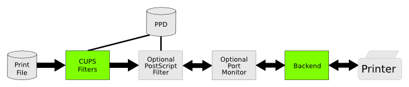
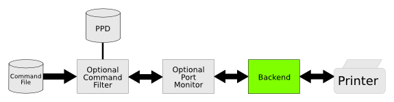

This document describes how to develop printer drivers for PostScript printers. Topics include: printer driver basics, creating new PPD files, importing existing PPD files, using custom filters, implementing color management, and adding Mac OS X features.
| See Also | Programming: Developing Raster Printer Drivers Programming: Filter and Backend Programming Programming: Introduction to the PPD Compiler Programming: Raster API References: PPD Compiler Driver Information File Reference Specifications: CUPS PPD Extensions |
|---|
A CUPS PostScript printer driver consists of a PostScript Printer Description (PPD) file that describes the features and capabilities of the device, zero or more filter programs that prepare print data for the device, and zero or more support files for color management, online help, and so forth. The PPD file includes references to all of the filters and support files used by the driver.
Every time a user prints something the scheduler program, cupsd(8), determines the format of the print job and the programs required to convert that job into something the printer understands. CUPS includes filter programs for many common formats, for example to convert Portable Document Format (PDF) files into device-independent PostScript, and then from device-independent PostScript to device-dependent PostScript. Figure 1 shows the data flow of a typical print job.
|  |
The optional PostScript filter can be provided to add printer-specific commands to the PostScript output that cannot be represented in the PPD file or to reorganize the output for special printer features. Typically this is used to support advanced job management or finishing functions on the printer. CUPS includes a generic PostScript filter that handles all PPD-defined commands.
The optional port monitor handles interface-specific protocol or encoding issues. For example, many PostScript printers support the Binary Communications Protocol (BCP) and Tagged Binary Communications Protocol (TBCP) to allow applications to print 8-bit ("binary") PostScript jobs. CUPS includes port monitors for BCP and TBCP, and you can supply your own port monitors as needed.
The backend handles communications with the printer, sending print data from the last filter to the printer and relaying back-channel data from the printer to the upstream filters. CUPS includes backend programs for common direct-connect interfaces and network protocols, and you can provide your own backend to support custom interfaces and protocols.
The scheduler also supports a special "command" file format for sending maintenance commands and status queries to a printer or printer driver. Command print jobs typically use a single command filter program defined in the PPD file to generate the appropriate printer commands and handle any responses from the printer. Figure 2 shows the data flow of a typical command job.
|  |
PostScript printer drivers typically do not require their own command filter since CUPS includes a generic PostScript command filter that supports all of the standard functions using PPD-defined commands.
We recommend using the CUPS PPD compiler, ppdc(1), to create new PPD files since it manages many of the tedious (and error-prone!) details of paper sizes and localization for you. It also allows you to easily support multiple devices from a single source file. For more information see the "Introduction to the PPD Compiler" document. Listing 1 shows a driver information file for a black-and-white PostScript printer.
Listing 1: "examples/postscript.drv"
// Include standard font and media definitions #include <font.defs> #include <media.defs> // Specify this is a PostScript printer driver DriverType ps // List the fonts that are supported, in this case all standard fonts Font * // Manufacturer, model name, and version Manufacturer "Foo" ModelName "Foo LaserProofer 2000" Version 1.0 // PostScript printer attributes Attribute DefaultColorSpace "" Gray Attribute LandscapeOrientation "" Minus90 Attribute LanguageLevel "" "3" Attribute Product "" "(Foo LaserProofer 2000)" Attribute PSVersion "" "(3010) 0" Attribute TTRasterizer "" Type42 // Supported page sizes *MediaSize Letter MediaSize Legal MediaSize A4 // Query command for page size Attribute "?PageSize" "" " save currentpagedevice /PageSize get aload pop 2 copy gt {exch} if (Unknown) 23 dict dup [612 792] (Letter) put dup [612 1008] (Legal) put dup [595 842] (A4) put {exch aload pop 4 index sub abs 5 le exch 5 index sub abs 5 le and {exch pop exit} {pop} ifelse } bind forall = flush pop pop restore" // Specify the name of the PPD file we want to generate PCFileName "fooproof.ppd"
PostScript drivers require the attributes listed in Table 1. If not specified, the defaults for CUPS drivers are used. A typical PostScript driver information file would include the following attributes:
Attribute DefaultColorSpace "" Gray Attribute LandscapeOrientation "" Minus90 Attribute LanguageLevel "" "3" Attribute Product "" "(Foo LaserProofer 2000)" Attribute PSVersion "" "(3010) 0" Attribute TTRasterizer "" Type42
| Attribute | Description |
|---|---|
| DefaultColorSpace | The default colorspace: Gray, RGB, CMY, or CMYK. If not specified, then RGB is assumed. |
| LandscapeOrientation | The preferred landscape orientation: Plus90, Minus90, or Any. If not specified, Plus90 is assumed. |
| LanguageLevel | The PostScript language level supported by the device: 1, 2, or 3. If not specified, 2 is assumed. |
| Product | The string returned by the PostScript product operator, which must include parenthesis to conform with PostScript syntax rules for strings. Multiple Product attributes may be specified to support multiple products with the same PPD file. If not specified, "(ESP Ghostscript)" and "(GNU Ghostscript)" are assumed. |
| PSVersion | The PostScript interpreter version numbers as returned by the version and revision operators. The required format is "(version) revision". Multiple PSVersion attributes may be specified to support multiple interpreter version numbers. If not specified, "(3010) 705" and "(3010) 707" are assumed. |
| TTRasterizer | The type of TrueType font rasterizer supported by the device, if any. The supported values are None, Accept68k, Type42, and TrueImage. If not specified, None is assumed. |
Most PostScript printer PPD files include query commands (?PageSize, etc.) that allow applications to query the printer for its current settings and configuration. Query commands are included in driver information files as attributes. For example, the example in Listing 1 uses the following definition for the PageSize query command:
Attribute "?PageSize" "" " save currentpagedevice /PageSize get aload pop 2 copy gt {exch} if (Unknown) 23 dict dup [612 792] (Letter) put dup [612 1008] (Legal) put dup [595 842] (A4) put {exch aload pop 4 index sub abs 5 le exch 5 index sub abs 5 le and {exch pop exit} {pop} ifelse } bind forall = flush pop pop restore"
Query commands can span multiple lines, however no single line may contain more than 255 characters.
CUPS includes a utility called ppdi(1) which allows you to import existing PPD files into the driver information file format used by the PPD compiler ppdc(1). Once imported, you can modify, localize, and regenerate the PPD files easily. Type the following command to import the PPD file mydevice.ppd into the driver information file mydevice.drv:
ppdi -o mydevice.drv mydevice.ppd
If you have a whole directory of PPD files that you would like to import, you can list multiple filenames or use shell wildcards to import more than one PPD file on the command-line:
ppdi -o mydevice.drv mydevice1.ppd mydevice2.ppd ppdi -o mydevice.drv *.ppd
If the driver information file already exists, the new PPD file entries are appended to the end of the file. Each PPD file is placed in its own group of curly braces within the driver information file.
Normally a PostScript printer driver will not utilize any additional print filters. For drivers that provide additional filters such as a CUPS command file filter for doing printer maintenance, you must also list the following Filter directive to handle printing PostScript files:
Filter application/vnd.cups-postscript 0 -
The application/vnd.cups-command file type is used for CUPS command files. Use the following Filter directive to handle CUPS command files:
Filter application/vnd.cups-command 100 /path/to/command/filter
To use the standard PostScript command filter, specify commandtops as the path to the command filter.
The application/pdf file type is used for unfiltered PDF files while the application/vnd.cups-pdf file type is used for filtered PDF files. Use the following Filter directive to handle filtered PDF files:
Filter application/vnd.cups-pdf 100 /path/to/pdf/filter
For unfiltered PDF files, use:
Filter application/pdf 100 /path/to/pdf/filter
Custom PDF filters that accept filtered data do not need to perform number-up processing and other types of page imposition, while those that accept unfiltered data MUST do the number-up processing themselves.
The application/vnd.cups-postscript file type is used for filtered PostScript files. Use the following Filter directive to handle PostScript files:
Filter application/vnd.cups-postscript 100 /path/to/postscript/filter
CUPS uses ICC color profiles to provide more accurate color reproduction. The cupsICCProfile attribute defines the color profiles that are available for a given printer, for example:
Attribute cupsICCProfile "ColorModel.MediaType.Resolution/Description" /path/to/ICC/profile
where "ColorModel.MediaType.Resolution" defines a selector based on the corresponding option selections. A simple driver might only define profiles for the color models that are supported, for example a printer supporting Gray and RGB might use:
Attribute cupsICCProfile "Gray../Grayscale Profile" /path/to/ICC/gray-profile Attribute cupsICCProfile "RGB../Full Color Profile" /path/to/ICC/rgb-profile
The options used for profile selection can be customized using the cupsICCQualifier2 and cupsICCQualifier3 attributes.
Mac OS X printer drivers can provide additional attributes to specify additional option panes in the print dialog, an image of the printer, a help book, and option presets for the driver software:
Attribute APDialogExtension "" /Library/Printers/Vendor/filename.plugin Attribute APHelpBook "" /Library/Printers/Vendor/filename.bundle Attribute APPrinterIconPath "" /Library/Printers/Vendor/filename.icns Attribute APPrinterPreset "name/text" "*option choice ..."